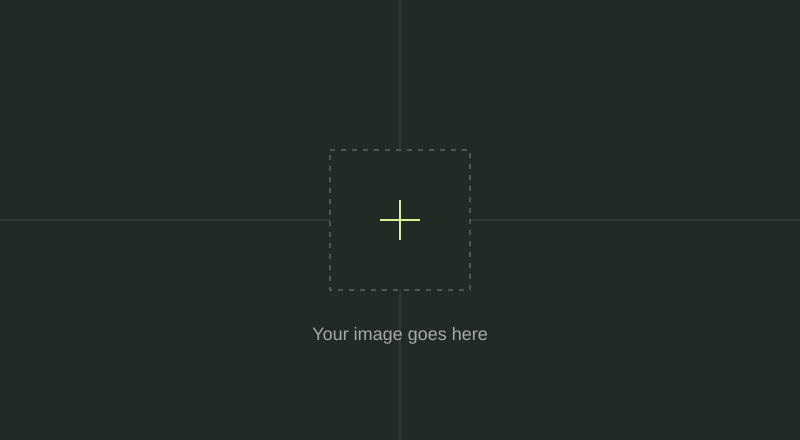

Week 01 / Research note
[Reference title]
- Source / attribution
- [Creator, work title, year, original URL, and licence or permission.]
- Interpretation
- [What do you notice? What makes this reference interesting?]
- Connection to my practice
- [How could this inform your own creative interests?]